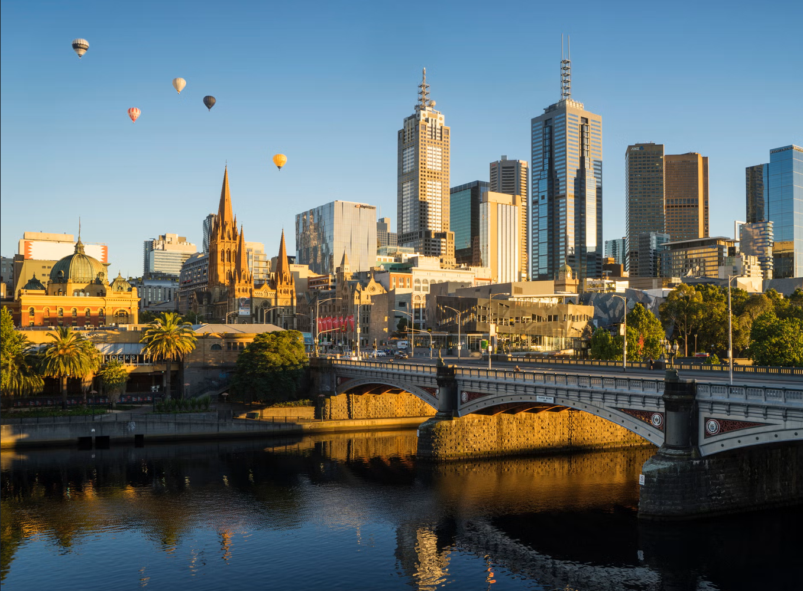

Abella | 10min read | 20-10-2023

Melbourne, often referred to as Australia's cultural capital, is a dynamic and cosmopolitan city known for its diverse and lively atmosphere. Nestled in the southeastern state of Victoria, Melbourne offers a rich tapestry of experiences that blend old-world charm with modern vitality. The city is celebrated for its thriving arts scene, featuring numerous galleries, theaters, and music venues. Its laneways are adorned with striking street art, and the coffee culture is renowned worldwide. Sporting enthusiasts gather at iconic venues like the Melbourne Cricket Ground. Melbourne's culinary landscape is a fusion of global flavors, with vibrant markets and top-notch dining establishments. The city's parks and gardens provide green oases in the urban jungle, and it consistently ranks highly in quality-of-life indexes, making it an attractive destination for residents and visitors alike.
Arts and Culture:
Melbourne is Australia's cultural epicenter. It boasts numerous world-class museums, galleries, and theaters, including the National Gallery of Victoria, Melbourne Museum, and the vibrant Arts Precinct, home to iconic venues like the State Theatre and Hamer Hall.
Culinary Delights:
The city is renowned for its food culture. Melbourne's laneways and streets are lined with an array of dining options, from fine dining establishments to hidden gems serving delectable street food. The coffee culture here is world-famous, with countless cafes serving expertly brewed cups.
Shopping Extravaganza:
Despite its bustling urban life, Melbourne treasures its green spaces. The Royal Botanic Gardens, Carlton Gardens, and Yarra Park offer serene escapes within the city. Moreover, Melbourne's commitment to sustainability and green initiatives is evident throughout. Melbourne's shopping scene is diverse, featuring everything from high-end boutiques in the Paris End of Collins Street to bustling markets like Queen Victoria Market. The city is a shopper's paradise.
Quality of Life:
Consistently ranked as one of the world's most livable cities, Melbourne places a high value on the well-being of its residents. Quality healthcare, safety, and a strong sense of community contribute to this reputation. In summary, Melbourne is a city of remarkable diversity, culture, and opportunities. It's a place where residents and visitors can experience the best of both worlds – a bustling metropolis brimming with life and a tranquil oasis offering quality living. Melbourne truly stands out as one of Australia's crown jewels.